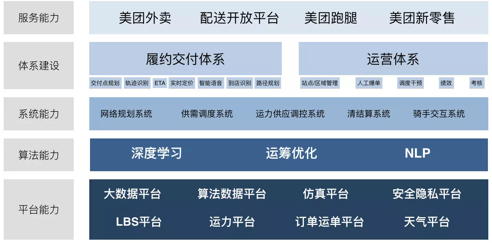
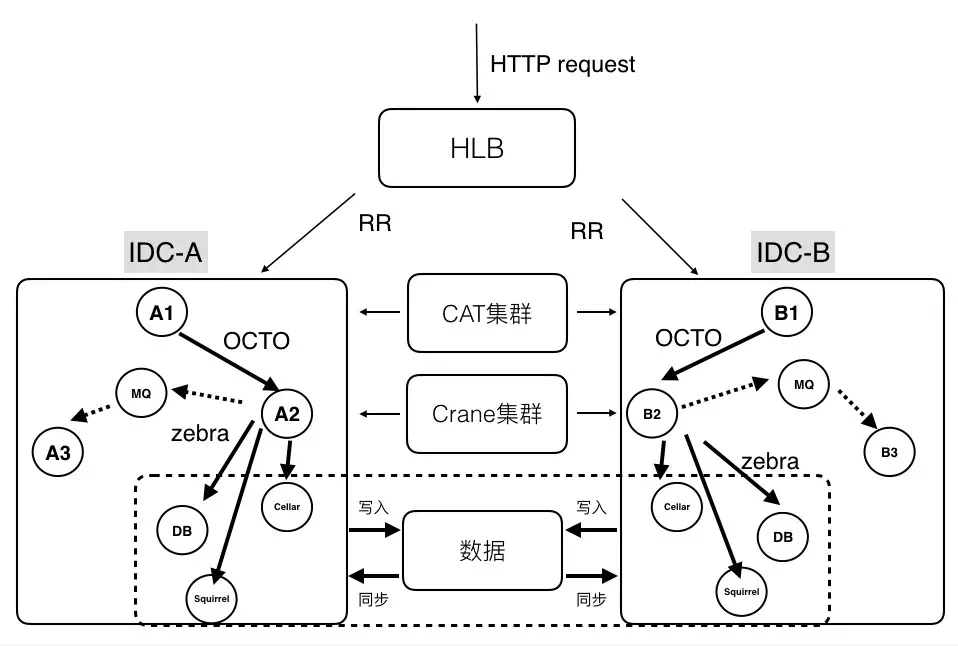
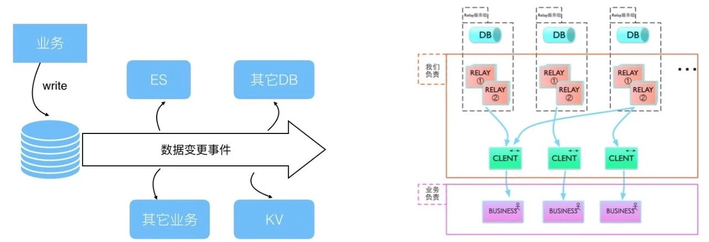
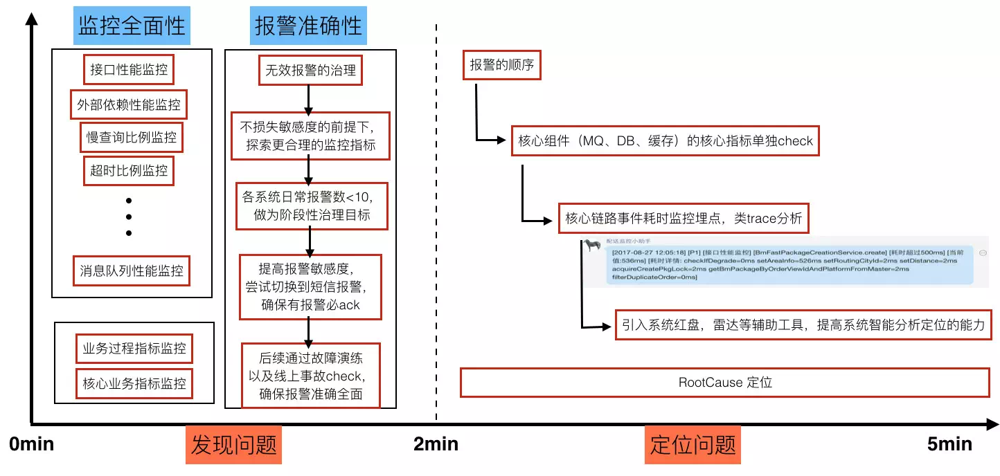
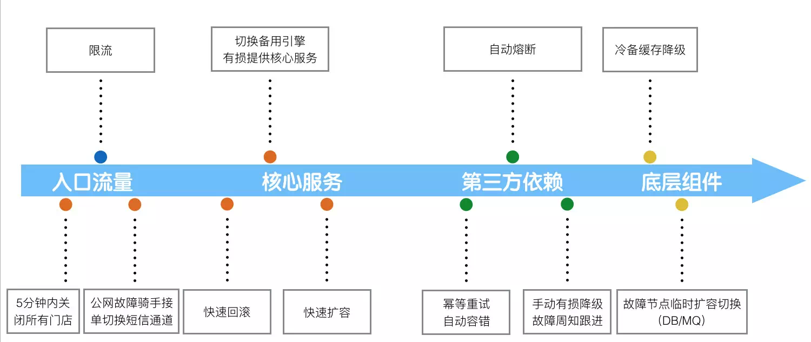
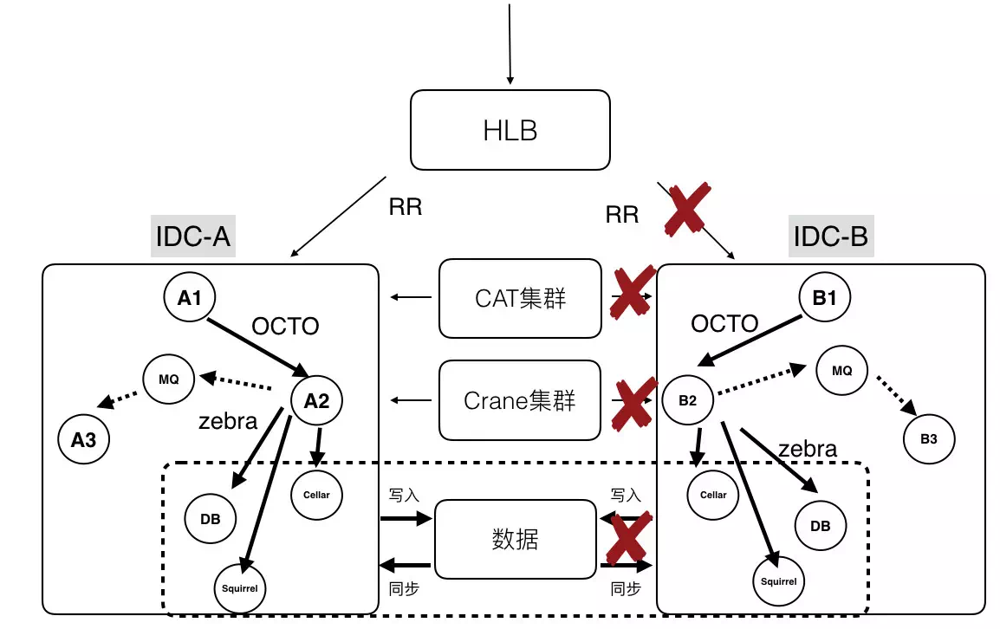
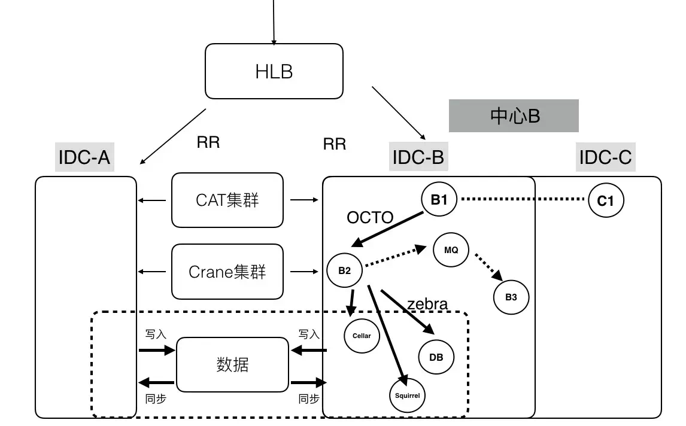
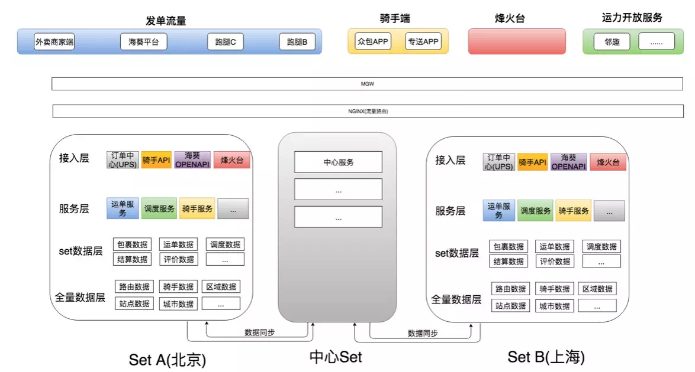
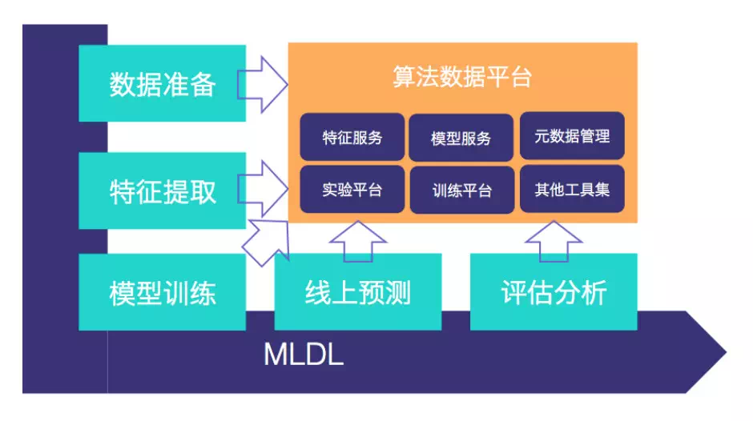
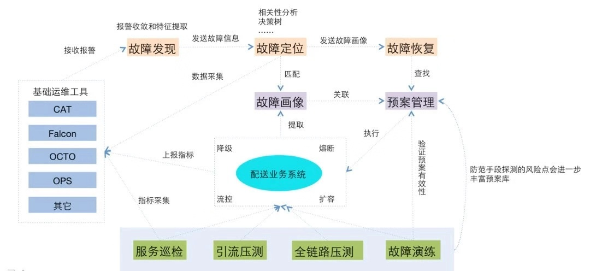

美团即时物流的分布式系统架构设计
背景
美团外卖已经发展了五年，即时物流探索也经历了 3 年多的时间，业务从零孵化到初具规模，在整个过程中积累了一些分布式高并发系统的建设经验。最主要的收获包括两点：
即时物流业务对故障和高延迟的容忍度极低，在业务复杂度提升的同时也要求系统具备分布式、可扩展、可容灾的能力。即时物流系统阶段性的逐步实施分布式系统的架构升级，最终解决了系统宕机的风险。
围绕成本、效率、体验核心三要素，即时物流体系大量结合 AI 技术，从定价、ETA、调度、运力规划、运力干预、补贴、核算、语音交互、LBS 挖掘、业务运维、指标监控等方面，业务突破结合架构升级，达到促规模、保体验、降成本的效果。
本文主要介绍在美团即时物流分布式系统架构逐层演变的进展中，遇到的技术障碍和挑战：
订单、骑手规模大，供需匹配过程的超大规模计算问题。
遇到节假日或者恶劣天气，订单聚集效应，流量高峰是平常的十几倍。
物流履约是线上连接线下的关键环节，故障容忍度极低，不能宕机，不能丢单，可用性要求极高。
数据实时性、准确性要求高，对延迟、异常非常敏感。
美团即时物流架构
美团即时物流配送平台主要围绕三件事展开：一是面向用户提供履约的 SLA，包括计算送达时间 ETA、配送费定价等；二是在多目标（成本、效率、体验）优化的背景下，匹配最合适的骑手；三是提供骑手完整履约过程中的辅助决策，包括智能语音、路径推荐、到店提醒等。

在一系列服务背后，是美团强大的技术体系的支持，并由此沉淀出的配送业务架构体系，基于架构构建的平台、算法、系统和服务。庞大的物流系统背后离不开分布式系统架构的支撑，而且这个架构更要保证高可用和高并发。
分布式架构，是相对于集中式架构而言的一种架构体系。分布式架构适用 CAP 理论（Consistency 一致性，Availability 可用性，Partition Tolerance 分区容忍性）。在分布式架构中，一个服务部署在多个对等节点中，节点之间通过网络进行通信，多个节点共同组成服务集群来提供高可用、一致性的服务。
早期，美团按照业务领域划分成多个垂直服务架构；随着业务的发展，从可用性的角度考虑做了分层服务架构。后来，业务发展越发复杂，从运维、质量等多个角度考量后，逐步演进到微服务架构。这里主要遵循了两个原则：不宜过早的进入到微服务架构的设计中，好的架构是演进出来的不是提前设计出来的。
分布式系统实践

上图是比较典型的美团技术体系下的分布式系统结构：依托了美团公共组件和服务，完成了分区扩容、容灾和监控的能力。前端流量会通过 HLB 来分发和负载均衡；在分区内，服务与服务会通过 OCTO 进行通信，提供服务注册、自动发现、负载均衡、容错、灰度发布等等服务。当然也可以通过消息队列进行通信，例如 Kafka、RabbitMQ。在存储层使用 Zebra 来访问分布式数据库进行读写操作。利用 CAT（美团开源的分布式监控系统）进行分布式业务及系统日志的采集、上报和监控。分布式缓存使用 Squirrel+Cellar 的组合。分布式任务调度则是通过 Crane。
在实践过程还要解决几个问题，比较典型的是集群的扩展性，有状态的集群可扩展性相对较差，无法快速扩容机器，无法缓解流量压力。同时，也会出现节点热点的问题，包括资源不均匀、CPU 使用不均匀等等。
首先，配送后台技术团队通过架构升级，将有状态节点变成无状态节点，通过并行计算的能力，让小的业务节点去分担计算压力，以此实现快速扩容。
第二是要解决一致性的问题，对于既要写 DB 也要写缓存的场景，业务写缓存无法保障数据一致性，美团内部主要通过 Databus 来解决，Databus 是一个高可用、低延时、高并发、保证数据一致性的数据库变更实时传输系统。通过 Databus 上游可以监控业务 Binlog 变更，通过管道将变更信息传递给 ES 和其他 DB，或者是其他 KV 系统，利用 Databus 的高可用特性来保证数据最终是可以同步到其他系统中。

第三是我们一直在花精力解决的事情，就是保障集群高可用，主要从三个方面来入手，事前较多的是做全链路压测评，估峰值容量；周期性的集群健康性检查；随机故障演练（服务、机器、组件）。事中做异常报警（性能、业务指标、可用性）；快速的故障定位（单机故障、集群故障、IDC 故障、组件异常、服务异常）；故障前后的系统变更收集。事后重点做系统回滚；扩容、限流、熔断、降级；核武器兜底。


单 IDC 的快速部署 & 容灾
单 IDC 故障之后，入口服务做到故障识别，自动流量切换；单 IDC 的快速扩容，数据提前同步，服务提前部署，Ready 之后打开入口流量；要求所有做数据同步、流量分发的服务，都具备自动故障检测、故障服务自动摘除；按照 IDC 为单位扩缩容的能力。

多中心尝试
美团 IDC 以分区为单位，存在资源满排，分区无法扩容。美团的方案是多个 IDC 组成虚拟中心，以中心为分区的单位；服务无差别的部署在中心内；中心容量不够，直接增加新的 IDC 来扩容容量。

单元化尝试
相比多中心来说，单元化是进行分区容灾和扩容的更优方案。关于流量路由，美团主要是根据业务特点，采用区域或城市进行路由。数据同步上，异地会出现延迟状况。SET 容灾上要保证同本地或异地 SET 出现问题时，可以快速把 SET 切换到其他 SET 上来承担流量。

智能物流的核心技术能力和平台沉淀
机器学习平台，是一站式线下到线上的模型训练和算法应用平台。之所以构建这个平台，目的是要解决算法应用场景多，重复造轮子的矛盾问题，以及线上、线下数据质量不一致。如果流程不明确不连贯，会出现迭代效率低，特征、模型的应用上线部署出现数据质量等障碍问题。

JARVIS 是一个以稳定性保障为目标的智能化业务运维 AIOps 平台。主要用于处理系统故障时报警源很多，会有大量的重复报警，有效信息很容易被淹没等各种问题。此外，过往小规模分布式集群的运维故障主要靠人和经验来分析和定位，效率低下，处理速度慢，每次故障处理得到的预期不稳定，在有效性和及时性方面无法保证。所以需要 AIOps 平台来解决这些问题。

未来的挑战
经过复盘和 Review 之后，我们发现未来的挑战很大，微服务不再“微”了，业务复杂度提升之后，服务就会变得膨胀。其次，网状结构的服务集群，任何轻微的延迟，都可能导致的网络放大效应。另外复杂的服务拓扑，如何做到故障的快速定位和处理，这也是 AIOps 需要重点解决的难题。最后，就是单元化之后，从集群为单位的运维到以单元为单位的运维，也给美团业务部署能力带来很大的挑战。
注：文章来源美团即时物流的分布式系统架构设计